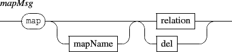
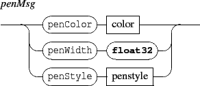
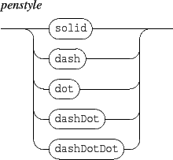
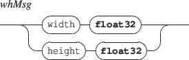
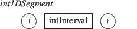
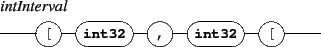
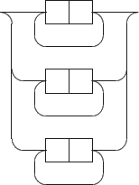
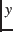

The map messages can be sent to any address with the form /ITL/scene/identifier. It is intended to describe the target object relation to time and sets a relation between an object segmentation and a time segmentation. The global form of the message is:
The relation parameter must be sent as a single string which format is described below. It consists in a list of associations between the object local space and its time space expressed as segments.

Segments are expressed as a list of intervals. For a 1 dimension resource, a segment is a made of a single interval. For a 2 dimensions resource, a segment is a made of 2 intervals: an interval on the x-axis and one on the y-axis for graphic based resource, or an interval on columns and one on lines for text based resources. Intervals are right-opened.
The different kind of relations corresponds to:
The specified map can be named with an optional mapName string; this name can be further reused, during object synchronization, to specify the mapping to use. When mapName is not specified, the mapping has a default empty name.
The del command deletes the mapping specified with mapName, or the 'empty name' mapping if no map name is specified.
| component type | segmentation type |
| txt, txtf | int2DSegments |
| img | int2DSegments |
| rect, ellipse, polygon, curve | float2DSegments |
| graph | int1DSegments |







Relative time is expressed as rational values where 1 represents a whole note.

EXAMPLE
Mapping an image graphic space to time:
|
/ITL/scene/myImage map
"( [0, 67[ [0, 86[ ) ( [0/2, 1/2[ ) ( [67, 113[ [0, 86[ ) ( [1/2, 1/1[ ) ( [113, 153[ [0, 86[ ) ( [1/1, 3/2[ ) ( [153, 190[ [0, 86[ ) ( [3/2, 2/1[ ) ( [190, 235[ [0, 86[ ) ( [2/1, 5/2[ )" |
NOTE ABOUT LOCAL SPACES